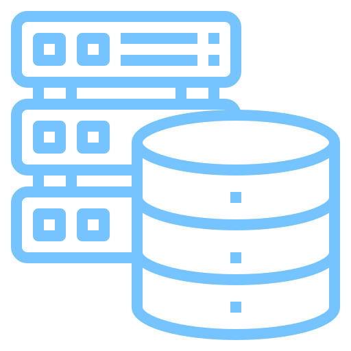
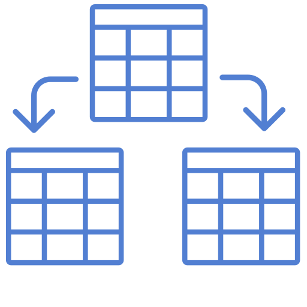
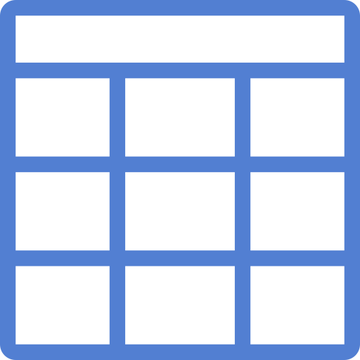
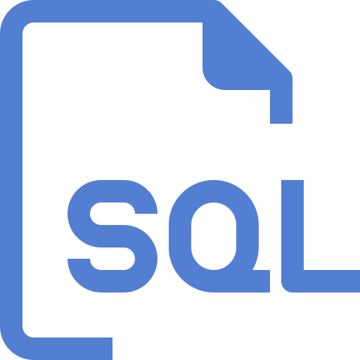
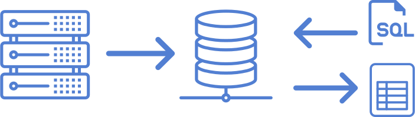
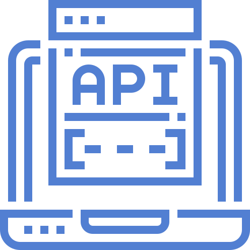

Ice Breaker
Let's chill together
Write in the chat:
Example:
Icon made by Freepik
Before we get going, we're going to do a quick little ice breaker. And we're going to use the chat box for this.
If everyone could write in the chat your first name, along with three positive words to describe yourself. Like... funny.. or brave.
This is a great exercise whenever you need a little boost of confidence. We all can get a little down on ourselves
from time to time. And one way to pick yourself up is to write down some things you've accomplished that you're proud of, or
some postive traits you have, to remind yourself of your good qualities and the things you're capable of doing.
Make It Happen With APIs
The Great Data Journey
Presented by Alison Tinker
Software Developer at SingleStone
Hi everyone and WELCOME! You're tuning in to Make It Happen With APIs: The Great Data Journey and the
Awesomeness of APIs. I'm Alison Tinker, I'm a software developer at SingleStone, and I'm going to be your guide on
this little data adventure we're embarking on today. First, I want to thank you all for being here. I think it's
fantastic that you're taking time out of your week to participate in this wonderful conference. And I really hope you've enjoyed
your other workshops so far. I especially hope you enjoy this one.
Introduction
Who are you anyway?
Hi, I'm Alison!
I'm a Software Engineer.
When I'm not coding I like gardening and playing video games.
Icon made by Freepik
Just want to briefly introduce myself before moving on. Because I think it might be helpful
for you to know a little bit about my background. Before I became a software engineer, I was a graphic designer. I made pretty pictures for magazines
and websites.
Let's Get Started
Before we begin...
We'll have breaks for questions. At that point you can ask a questions aloud if you want to.
Use the Chat to write down questions you think of along the way. I'll come back to them during discussion time.
There will be 3 informal exercises done in breakout rooms
Need a break? It's OK!
Just a few housekeeping notes before we start, we're going to keep everyone muted until the break for questions.
Servers
What is a server?
It can be a physical device
Or it can be virtual
Lives in a server closet, data center, or the cloud
There are many different types of servers, like a database server
We start off our data journey at the source: the server. You may have heard the term "server" before. But what
does it actually mean? A server can be a physical piece of hardware, like your phone or laptop computer. Physical servers
look similar to the icon you see here. They're typically stored in special closets or data warehouses where they can
be maintained and kept safe.multiple linked servers. This virtual environment of linked servers is what is known as "the cloud."
So whenever you hear someone say "the cloud" in the context of computing, you'll know they're referring to: multiple servers
that are linked together and connected to the internet.
Icons made by srip and xnimrodx

Database Servers
What do they do??
Used for storing and managing databases
Allows authorized users and applications to access databases
Can regularly back up data and protect it
Since we're taking about data in this workshop, the type of server that WE are interested
in is the database server. A database server contains databases and
gives computers ways to access those databases. You can also configure a database server to perform backups of your databases.
In other words, it will regularly store copies of the databases. That way, if something were to happen to the original database, you'd have
a back up to use instead. Like a spare tire for a car. Now, onto the databases themselves...
Icon made by phatplus
Databases
what is a database?
A system that contains a collection of information (data)
Lives on a server
There are many different kinds of databases
Icon made by srip
We've learned about the servers where databases live. But what exactly is a database? A database is a system
that contains a structured collection of data. There are lots of different kinds of databases, but the one that we use
most frequently in web application development is called a Relational Database.

Relational Databases
What is a relational database?
Made up of tables that contain data, like a spreadsheet
The tables can be "related" by any data values they share
Icon made by Vitaly Gorbachev and dmitri13
Relational data is organized by using tables that contain columns and rows, like a spreadsheet.
The tables are related by any data that they share. For example, if you and one of your friends both love playing Minecraft,
you could say you're related by a common interest.

Tables
Columns and rows
A database table is like a spreadsheet, it has columns and rows
Each table column has a name and a data type
Each row represents one record of data
Every row also has a unique ID
Icon made by Freepik
Data tables should look familiar to you if you've ever used a spreadsheet, or used tables for organizing data
in math and science. They have columns that have names and a data type associated with them. And they also
have rows. Each row in a table represents a set of data, and has a unique ID to distinguish it from all the other rows.
Table Data
+----+------------------------+--------------+---------+
| id | product_name | plu_number | price |
+----+------------------------+--------------+---------+
| 1 | Passion Fruit | 3038 | 3.00 |
| 2 | Grapefruit | 3092 | 1.00 |
| 3 | Kiwi Fruit | 4301 | 2.00 |
| 4 | Figs | 3397 | 3.00 |
| 5 | Persimmon | 4492 | 3.00 |
+----+------------------------+--------------+---------+
5 rows in set
This is an example of what a relational database table looks like. This table is used for storing information about
different fruits that you can buy in the grocery store. Whenever you check out of a grocery store, the computer that
the cashier uses will access information from database tables like this one.
Talking to a Database
the wrong way
Hi database, can you
look in the cats table and give me all the records for female kittens that have stripes?
...
ERROR: 1064 (42000): You have an error in your SQL syntax; check the
manual that corresponds to your MySQL server version for the right syntax to use
near 'Hi database, can you look in the cats table and give me all the records for' at line 1
So, how do we talk to a database and ask it to give us the data we want? The database doesn't understand plain English.
We can't just type in a command that says "Hi database, can you look in the cats table and give me all the records
for female kittens that have stripes?" does understand. So let's see what a real SQL query looks like...
Talking to a Database
the right way
SELECT * FROM cats WHERE markings = 'stripes' AND
gender = 'female' AND age_months <= 6;
...
+----+----------+----------+--------+------------+--------+
| id | name | markings | color | age_months | gender |
+----+----------+----------+--------+------------+--------+
| 4 | Yoda | Stripes | Grey | 1 | female |
| 7 | Gigi | Stripes | Orange | 2 | female |
| 12 | PingPong | Stripes | Brown | 1 | female |
| 14 | Regina | Stripes | Orange | 3 | female |
+----+----------+----------+--------+------------+--------+
4 rows in set (0.0004 sec)
What you see here is an example of a SQL query that we can give to the database.
SQL stands for Structured Query Language, and it's the most commonly used language
that software developers use to communicate with databases. SQL queries are written instructions that we give
to a databases to tell it what to do with the data. In this case we're telling it to SELECT some data for us.

Querying Data
what does it mean to query data?
A query is an instruction that we give to the database
Queries are written in a language that the database understands
Structured Query Language (SQL) is the language most software developers use
Queries allow us to tell the database to do stuff with our data
Icon made by Smartline
We've learned that a query is an instruction that we give to the database,
Querying Exercise
let's query some data!
Go to this link: https://www.db-fiddle.com/f/hE57VcQbzx4KDzZMMEf2yF/9
Click the link that says 'Fork' in the top nav bar
Click the link that says 'Run' in the top nav bar
Go to the last statement on the left and replace the word 'avocado' with a different food.
Click 'Run' again
Change the query on the right to: SELECT * FROM favorite_foods WHERE food_name = 'your food name here'
Click 'Run' again!
Bonus: try adding more data and/or changing your query to see what happens.
Now we're actually going to write some SQL! We're goin gto do this in an online app that simulates
a database and provides an interface for making data queries.

Our Data Journey So Far
Let's recap
Servers contain databases
Databases contain tables that hold our data
We can use SQL to change the data in a table, and to get data back
Icons made by Freepik and Pixel perfect
Ok, we've covered quite a bit of ground. So now is a good time to recap. We've learned that servers contain
databases, and databases contain tables that hold our data. We can use Structured Query Language, or SQL, to talk
to a database and change data. We can also use SQL to get data back from a database.
Break For Questions
Let's discuss
Icon made by Freepik
Now's a good time to take a quick break for questions. I'm going to go through some of the chat questions, if there are any.
If we have time after that, we can open up the floor to anyone who wants to ask questions aloud.
You should signal that you want to ask a question aloud by using the raise your hand button, and then someone will unmute you.
Or you can just continue to ask questions via the chat.

APIs
What's an API?
API stands for Application Programming Interface
Acts as a messenger between a database and other applications
The API receives requests for data, fetches the data from the database, and then returns it
Icon made by Eucalyp
So we’ve learned how to query a databases that we have access to, but what if I wanted to get data from a database
that I don't have direct access to? What if I wanted to get data from Instagram's database? Or Facebook's database?
They don't give access to their database, because that would be unsafe. They can't let random people do whatever they want to their user data.
So instead, they create an API. API stands for Application Programming Interface. messenger between a database and other applications.
An application makes a request to the API for some data, the API fetches the data from the database, and then returns it to those applications.
This allows companies like Facebook and Instagram to control what data people can have access to, and to control what they can do with that data.
Often, it will also act like a translator between the database and other applications, because it can format the data into a structure that’s easier for other applications to use.
Next we're going to watch a quick video that uses a really good analogy to describe what an API does.
API Exercise
Part 1
Go to: https://petstore.swagger.io/
Click on the green section under 'pet' that says 'POST /pet Add a new pet to the store'
Click on the button to the right that says 'Try it out'
In the white box, change the word "doggie" to another name... like "Toto" (keep it in quotes)
Change the word "available" to "adopted"
Click on the blue button that says "Execute"
Scroll down and you will see a black box with the response from the API
Icon made by ultimatearm
Let's look at an example of an API. This is a Petstore API created by a company called Swagger. They created this API to
show how easy it is to use APIs with an interface that they built. I'm going to demonstrate how to add data using this API, and then show
how to get it, just like we've been doing. Then you're going to try. This is part one.
API Exercise
Part 2
Scroll down
Click on the blue section under 'pet' that says GET /pet/{petID}
Click on the button to the right that says 'Try it out'
Paste the ID that you copied into the form field
Click the 'Execute' button
Click on the blue button that says "Execute"
You should see the pet that you added to the store
Icon made by ultimatearm
Now we move to part 2. We're going to get the data that we just added.
API Exercise
making your own page
Go to: https://codesandbox.io/s/make-it-happen-page-rffnk
Click on the button in the top right of the page that says 'Fork'
Navigate to the files by clicking on the icon that looks like a document
Click on the file that says 'constants.js'
Change the part of the tiktok URL after the text 'url=' to:
Watch the data change!
Icon made by ultimatearm
Now we arrive at our last exercise! We're going to use an app called code sandbox that let's us fetch data from different API endpoints
and display the data on a page. Again, I'm going to demo this and then we're going to use break out groups so you can try it out.
Data Journey Recap
Let's recap
Servers contain databases
Databases contain tables that hold our data
We can use SQL to change the data in a table, and to get data back
APIs are applications that take data to and from a database for us
We can use API endpoints to GET, POST, UPDATE, and DELETE data
Wow guys, we've reached the end of our data journey. This is just a quick recap of everything we've learned.
We're done!
Thank you for being here